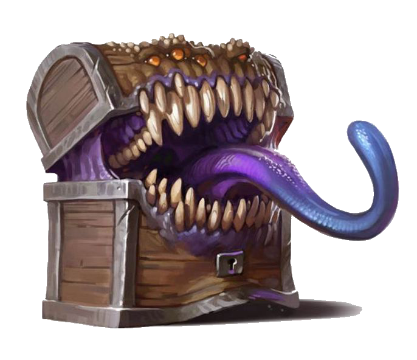

IT'S A MIMIC!

404That chest wasn’t loot…
The page you tried to open was actually a mimic. It already rolled initiative and chomped your route. Maybe you mis-typed the path – or the DM moved it.
Tip: Publish your Google Sheet as CSV before loading the dashboard. The mimic eats unpublished sheets.